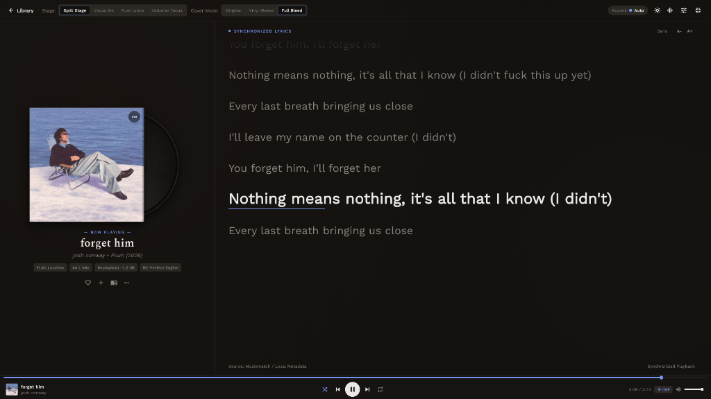

The desktop music player crafted for purists.
Bit-perfect libmpv audio engine, modular dockable panels, ISO 10-band graphic equalizer, and dynamic album-following aesthetics. No telemetry. No cloud lock-in. Just your library.
A layout that bends to your workflow.
Built on Flutter's modular docking engine. Split, tab, drag, resize, or maximize any panel. Keep your library catalogue, EQ, queue, and lyrics exactly where you need them.
[01:24] The needle drops in silence,
[01:28] Floating through waves of analog light,
[01:34] In the studio where resonance meets,
[01:42] Every nuance preserved, untouched by time.
ISO 10-band graphic equalizer with zero restart.
Runs as a persistent libmpv audio graph with automatic headroom compensation. Import Equalizer APO GraphicEQ files, AutoEQ parametric profiles, or fine-tune individual bands with real-time spline curves.
Every detail designed for listening.
From fast startup and native desktop integration to dual-player gapless crossfade, Studio prioritizes clarity and power.

Split-Stage Playback Environment
Full-screen immersive audio stage with split layout, live synchronized lyrics, album jacket artwork, and dedicated audio engine modal.
Bit-Perfect libmpv Pipeline
Direct hardware pass-through via media_kit and libmpv. Supports FLAC, ALAC, WAV, DSD, and OGG with equal-power crossfade (0–15s).
SQLite3 & Drift ORM
Fast, zero-latency local library scanner. Incremental launch updates ensure your crates are ready the millisecond the app opens.
Native Desktop Shell
Custom frameless titlebar, system tray minimization, global media shortcuts, Discord Rich Presence, and persistent session restore.
Subsonic & Navidrome
Stream music directly from Navidrome, OpenSubsonic, and LMS servers with salt+MD5 auth, remote search, and isolated catalogue storage.
Download Studio for your desktop.
Free and open-source. Choose your platform below to download the latest release.
Unzip anywhere and launch studio.exe. Portable & standalone.
Move studio.app to Applications. Right-click Open on first launch.
Extract and run ./studio. Requires libmpv.